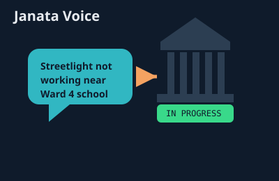

Janata Voice: Giving Citizens a Direct, Trackable Channel to Report Civic Problems
A bilingual (English/Nepali) platform where residents report potholes, garbage, and utility issues with a photo and a map pin, watch them move from pending to resolved, and vote on the problems that matter most to their ward — plus an experimental Nepali speech-to-text prototype aimed at voice-based reporting.

Overview
Most civic problems in a neighborhood — a broken streetlight, an overflowing garbage bin, a pothole that's been there for months — get reported the same informal way: word of mouth, a comment to a neighbor, maybe a call to a ward office that goes nowhere. Janata Voice ("People's Voice") is an attempt to replace that informal, lossy channel with something structured: citizens file an issue with a category, a ward, a location pinned on a map, and up to three photos, and then everyone — the person who reported it, other residents, and municipal staff — can watch it move through pending → in-progress → resolved instead of it just disappearing into a phone call nobody wrote down.
Because the platform is meant for actual residents of Nepal, not just a portfolio demo, bilingual support (English and Nepali) was a first-class requirement from the start rather than a translation layer bolted on at the end, and the project also became a testbed for an experimental Nepali speech-to-text feature aimed at people who'd rather describe a problem out loud than type it.
System Architecture
The system splits cleanly into a public-facing reporting/voting experience, a verification layer that adds accountability to reports, and an admin side for the municipal staff actually resolving issues.
1. Issue Reporting & Tracking
A citizen files an issue with a title, description, category (sanitation, road, water, electricity, garbage, or other), one of 32 wards, a location pinned on an interactive Leaflet map, and up to three photos uploaded via Multer. Each issue is a MongoDB document with a status field that only moves forward through pending → in-progress → resolved, giving every report a visible, append-only lifecycle rather than a report that can quietly vanish.
2. Community Layer
Other residents can upvote issues that affect them, which surfaces the problems a ward actually cares about rather than just the ones reported first, and join ward- or municipality-level discussion threads to talk through local issues collectively. This turns individual complaints into something closer to a visible community priority list that municipal staff can weigh against each other.
3. Identity & Trust Layer
Because an open reporting system is only as useful as the trust people place in it, citizens can optionally go through a KYC (know-your-citizen) flow — submitting a full name, email, phone number, national ID number, and a photo — which is stored server-side via a dedicated Mongoose model and reviewed independently of any specific issue report. A verified badge on a citizen's reports gives municipal reviewers a reason to prioritize them over anonymous, unverifiable ones.
4. Admin & Resolution Layer
A separate admin dashboard lets municipal staff manage the full issue queue, review pending KYC submissions, and flag genuinely urgent cases as "red alert" priority items that surface above the normal queue. Authentication throughout the platform — for both citizens and admins — is JWT-based, issued and verified by an Express middleware layer shared across all protected routes.
5. Experimental Voice Reporting
A separate FastAPI service prototypes Nepali speech-to-text using OpenAI's Whisper model, accepting an uploaded audio file at a single /upload-audio/ endpoint and returning the transcribed Nepali text. It's kept as a standalone service rather than integrated into the main reporting flow, since it's still at the experimental stage — the long-term goal is to let a citizen describe an issue out loud in Nepali and have it pre-fill the report form, lowering the barrier for residents less comfortable typing detailed descriptions.
Technical Challenges Overcome
- Enumerating 32 wards without turning the schema fragile: Ward names are locality-specific and needed hard validation rather than free text, since downstream features (filtering, admin routing, ward-level discussions) all depend on a report's ward being one of a known, fixed set. Encoding the ward list as a Mongoose
enumdirectly on theIssueschema pushed that validation down to the database layer instead of trusting the frontend to always send a clean value. - Keeping KYC data separate from issue data: Early on, it was tempting to attach identity fields directly onto whichever issue a citizen filed, but that would have meant re-verifying identity on every single report. Splitting KYC into its own model, checked once and referenced afterward, meant a citizen only goes through verification a single time and every subsequent report just inherits that trust status.
- A status field that can't accidentally go backwards: Because
statusis enforced as an enum with a defined forward progression in the controller logic — not just in the frontend — an admin action can't accidentally reopen a resolved issue or skip straight from pending to resolved without an in-progress step, which keeps the audit trail meaningful for residents checking back on a report. - Running Nepali speech recognition without a clean off-the-shelf model: Most speech-to-text APIs have thin or unreliable support for Nepali. Prototyping against OpenAI's Whisper "base" model directly, via a small local FastAPI wrapper rather than a hosted API, gave enough control to actually evaluate transcription quality on real Nepali audio samples before deciding whether the feature was worth building further.
Key Code / Hardware Components
The Issue schema is where most of the system's integrity guarantees actually live — the ward enum and status enum shown below are what keep downstream features (routing, filtering, the admin queue) working against clean, predictable data:
const issueSchema = new mongoose.Schema({
title: { type: String, required: true },
description: { type: String, required: true },
ward: { type: String, required: true, enum: ["ward1", "ward2", /* ...through */ "ward32"] },
images: { type: [String], required: true },
category: {
type: String,
required: true,
enum: ["sanitation", "road", "water", "electricity", "garbage", "other"],
},
location: { type: String, required: true },
latitude: String,
longitude: String,
status: { type: String, required: true, enum: ["pending", "in-progress", "resolved"] },
submittedBY: { type: String, required: true },
}, { timestamps: true });The voice-reporting prototype's transcription endpoint is deliberately minimal — a single upload route that hands the audio straight to Whisper and writes the result to disk, kept separate from the main API so it can be iterated on without risking the stability of the core reporting flow:
@app.post("/upload-audio/")
async def upload_audio(file: UploadFile = File(...)):
file_path = os.path.join(UPLOAD_DIR, file.filename)
with open(file_path, "wb") as buffer:
shutil.copyfileobj(file.file, buffer)
nepali_text = transcribe_nepali(file_path)
return {"message": "Transcription successful", "text": nepali_text}The full stack is a React 18 + TypeScript + Vite frontend styled with Tailwind CSS, using React Hook Form with Zod for form validation and React-Leaflet for the map picker; a Node.js/Express 5 + MongoDB backend with JWT auth, bcrypt password hashing, Multer for photo uploads, and Nodemailer for verification/reset emails; and the standalone FastAPI speech-to-text service described above.
Key Takeaways
Janata Voice reinforced how much of a civic platform's real value sits in the boring parts of the schema, not the flashy features. The ward enum, the forward-only status field, and the decision to keep KYC as its own model are unglamorous choices, but they're what actually make the platform trustworthy enough for a municipal staffer to rely on instead of just another unmoderated complaints inbox. Building the bilingual UI from day one, rather than retrofitting Nepali support later, was also a reminder that "who is this actually for" needs to shape architecture decisions early — a translation layer bolted on after the fact tends to leak English assumptions into date formats, pluralization, and form validation in ways that are painful to unwind later. And keeping the Whisper-based speech prototype as a separate, disposable service was the right call precisely because it let the idea be tested honestly, without dragging an unfinished experiment into the reliability requirements of the main reporting pipeline.